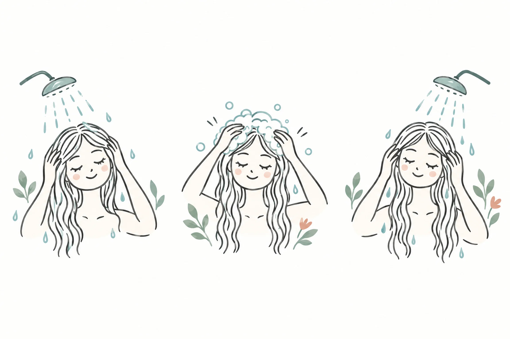
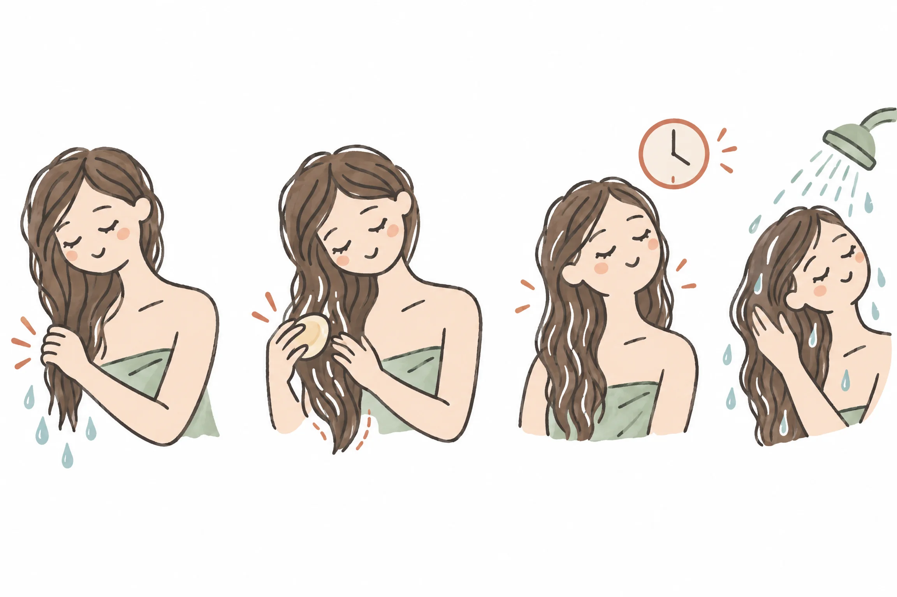

Shampoo sólido, paso a paso

- Mojate bien el pelo y la barra. Podés hacer espuma entre las manos o pasar la barra suavemente por el cuero cabelludo, en pocas zonas.
- Masajeá el cuero cabelludo con las yemas de los dedos para repartir la espuma. No hace falta frotar la barra sobre los largos.
- Enjuagá a fondo. Si sentís que la primera pasada no alcanzó, podés repetir con una cantidad pequeña.
Acondicionador en barra o crema de enjuague

Después del lavado, escurrí suavemente el exceso de agua. Aplicá el acondicionador de medios a puntas, evitando la raíz si preferís un acabado más liviano. En barra, deslizala con pasadas cortas o emulsioná un poco entre las manos; en crema, usá una cantidad chica y distribuí de manera pareja.
Dejalo actuar el tiempo que indique el producto y enjuagá bien. Si es tu primera vez, empezá con poco: siempre podés sumar un poco más en el próximo lavado.
Cómo guardar las barras
Entre usos, dejá que se sequen en una jabonera con drenaje o en un lugar ventilado. Evitá que queden apoyadas en agua o dentro de un recipiente cerrado mientras siguen húmedas.